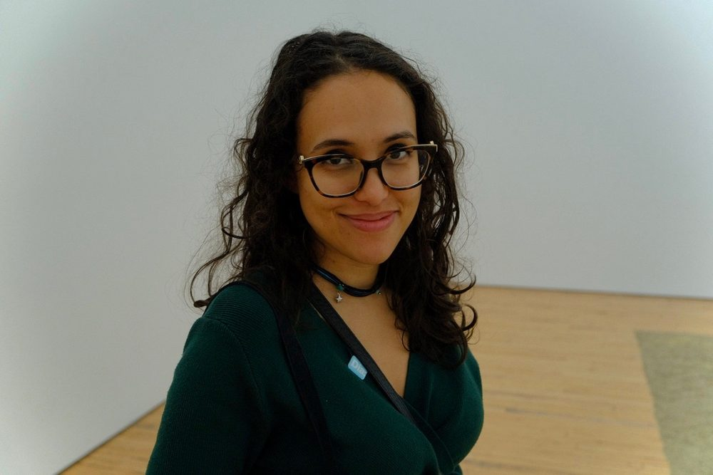
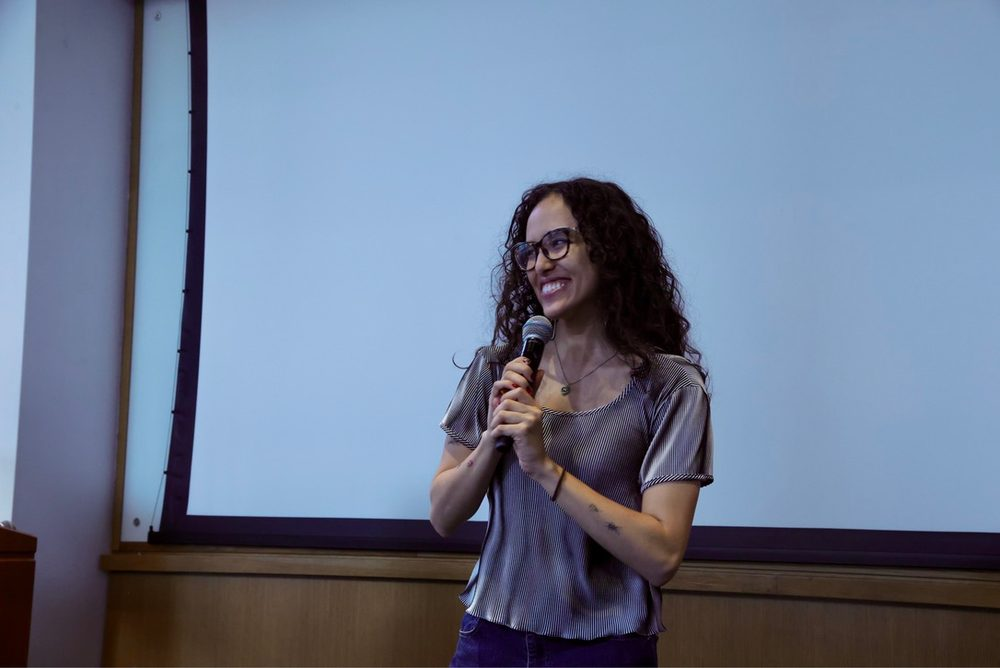
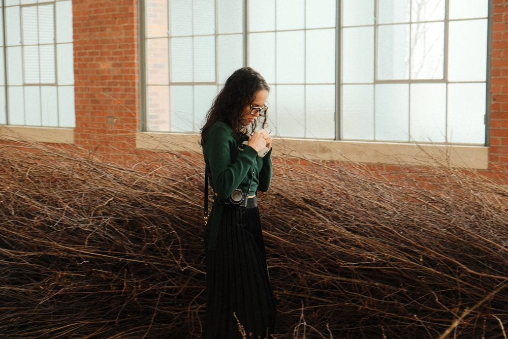

About



Gwen Goins is a Carolinian cyborg, third child, and digital native luddite. More conventionally, she is an artist, cultural organizer, and researcher based in New York. Her work spans collage, printmaking, installation, speculative design, writing, and public programming.
She is an M.P.S. candidate at NYU’s Interactive Telecommunications Program, where she co-organizes Black Interactive, a community supporting Black creative practice across art and technology. Before returning to school, she spent over four years at Amazon Web Services, most recently as a Product Operations Manager, coordinating product launches, adoption programs, and organizational change across global teams.
Artist statement
I am an artist and writer working with post-natural landscapes. Which is to say, I cut, layer, and print images of water, weeds, insects, and light, then let digital processes disturb them.
I approach the screen as an ecology, where glitches behave like weather and living matter. A copying error can spread through an image like a cell mutating. Compression eats at edges the way rot softens a leaf. Dropped frames and color shifts move across a surface like late light on a pond. Files, sensors, scanned paper, and found pictures feed one another there. Some things grow, some break down, and each copy changes what came before it.
Across collage, relief printmaking, video, projection, and speculative fiction, I explore how humans relate to the more-than-human, from the scale of the body to the institutions and infrastructures that shape collective life.
My work asks what reciprocal relationships with living systems might look like, and what kinds of futures become possible when we take those relationships seriously. I believe science fiction is a research methodology, storytelling is a technology, and modest utopias are worth building.
Have a project in mind? Gwen is interested in collaborations involving cultural programming, event production, curatorial research, and speculative design. She welcomes inquiries, introductions, and conversations about things worth making together. Get in touch →